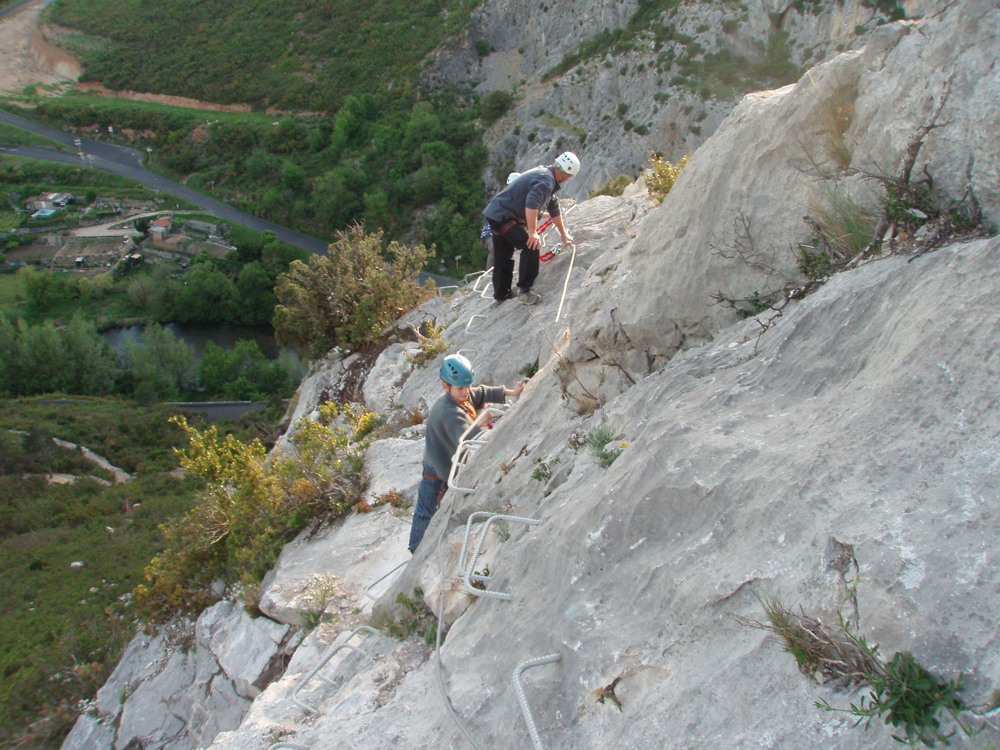
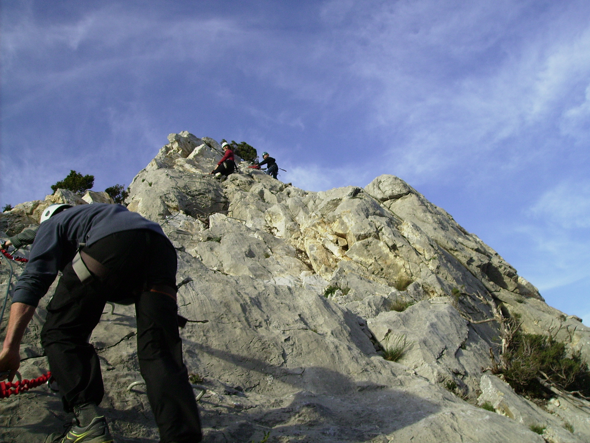
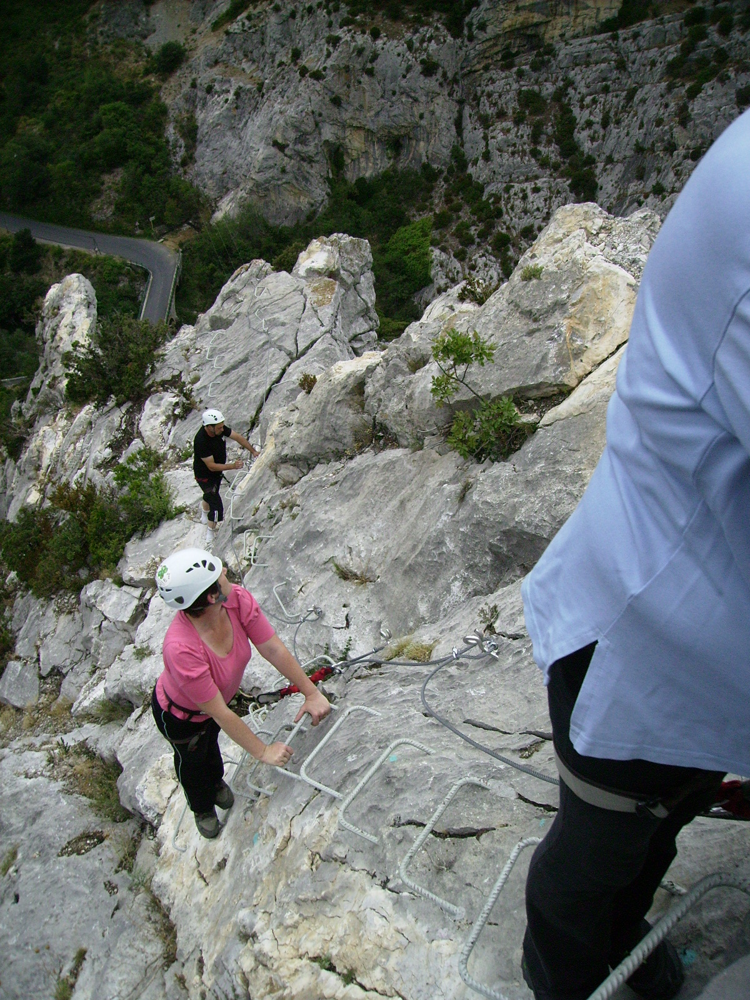

POUR DÉCOUVRIR
La via Pichona
Malgré son nom, la via Pichona n'est pas réservée aux enfants. Elle convient aux personnes qui souhaitent découvrir l'activité sans trop forcer ni rechercher de grandes sensations.
Un parcours accessible dès 8 ans, idéal pour une première expérience de la via ferrata.
8 ans
Âge minimum indiqué
80 m
Dénivelé
150 m
Longueur
1 à 2 h
Durée indicative